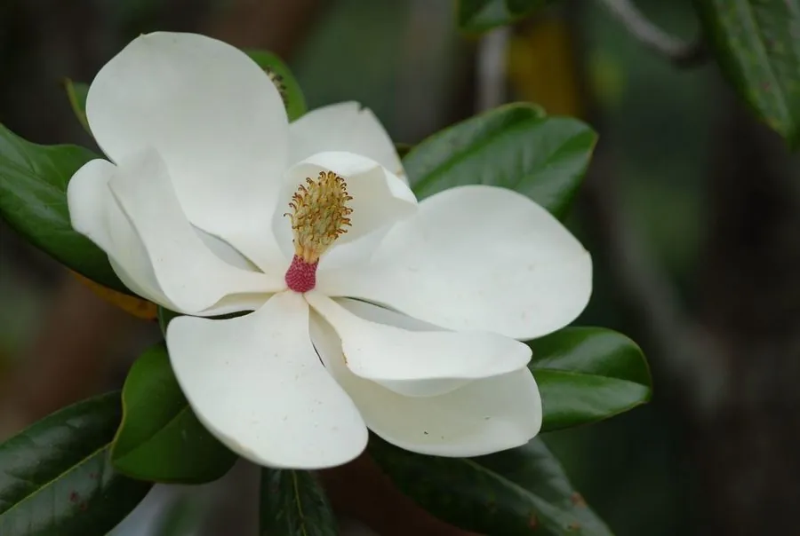

乔木 · 植物界
广玉兰 Magnolia grandiflora

原产北美的常绿大乔木，叶片厚革质光亮，夏季开大而洁白的杯状花，形似荷花，故又名“荷花玉兰”。
- 分类
- 门被子植物门纲木兰纲目木兰目科木兰科属木兰属
- 栖息环境
- 海拔 1000 米以下的平原、丘陵与庭院，喜温暖湿润和充足光照
- 地理分布
- 原产北美洲东南部，中国长江流域及以南地区广泛栽培
- 保护级别
- 暂无评估；中国未列入国家重点保护野生植物名录
物种志
广玉兰为常绿乔木，高可达 30 m，树冠卵圆形，树皮灰褐色；叶片椭圆形或倒卵形，厚革质，表面深绿有光泽，背面密被锈色短绒毛，边缘全缘。花期 5–7 月，花单生于枝顶，花径 15–25 cm，花被片 9–12 枚、白色、厚肉质，形似荷花，芳香浓郁；聚合蓇葖果圆柱形，成熟时开裂，露出红色种子。
广玉兰原产北美洲东南部，中国长江流域及以南地区广泛栽培，喜温暖湿润、光照充足，也耐半阴，适宜深厚肥沃、排水良好的酸性土壤。因树形端正、叶色浓绿、花大洁白，常作为行道树与庭园观赏树，也是城市绿化中的常绿骨干树种；花期长，一朵花开可维持数日。木材可制家具，叶与花可提取芳香油，树皮可入药。广玉兰与白玉兰不同，前者常绿、花大如荷，后者落叶、早春先花后叶。
形态与习性
- 株高可达 30 m，树冠卵圆形
- 花期5–7 月，花径 15–25 cm
- 果期9–10 月，聚合蓇葖果开裂
- 光照喜光，也耐半阴
- 水分喜湿润，怕积水
- 土壤深厚肥沃的酸性壤土
- 主要用途行道树与庭园观赏、叶花提取芳香油、树皮入药
趣味知识
- 广玉兰的花大如荷花、洁白芳香，因此又被称为“荷花玉兰”。
- 广玉兰是常绿乔木，而常见的白玉兰是落叶乔木，早春先花后叶。
- 广玉兰叶片背面密被锈色绒毛，正面深绿光亮，是辨认它的特征。
- 广玉兰原产北美，因树形优美、四季常绿，成为中国南方常见的行道树。